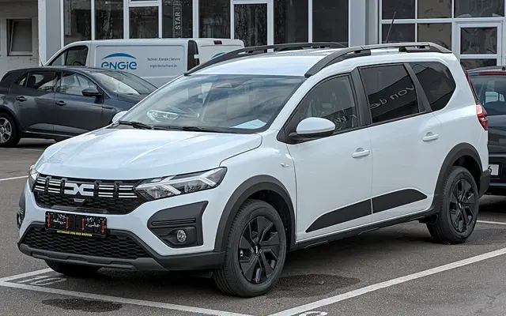

Par Motor › Precios por modelo › Dacia Jogger
Precio de segunda mano · noviembre de 2026¿Cuánto vale un Dacia Jogger de segunda mano?

Precio justo estimado de un Dacia Jogger usado en España, año por año, con los kilómetros normales para su edad y en buen estado: de 13.100 € a 23.900 €. Para tasar el tuyo con sus kilómetros reales y su estado, usa el tasador gratis.
Precios del Dacia Jogger por año
Jogger (2022–hoy)
Precio de nuevo: 1.0 TCe 110 CV, 17.000 € · Hybrid 140 CV, 22.000 € · 1.0 ECO-G (GLP) 100 CV, 17.500 €
| Año | Km normales | 1.0 TCe 110 CV · Gasolina | Hybrid 140 CV · Híbrido | 1.0 ECO-G (GLP) 100 CV · Gasolina |
|---|---|---|---|---|
| 2026 | 5.000 km | 17.600 € | 23.900 € | 18.100 € |
| 2025 | 20.000 km | 15.500 € | 21.000 € | 15.900 € |
| 2024 | 35.000 km | 14.600 € | 19.900 € | 15.100 € |
| 2023 | 50.000 km | 13.800 € | 18.800 € | 14.200 € |
| 2022 | 65.000 km | 13.100 € | 17.800 € | 13.500 € |
Kilómetros normales: 15.000 al año en gasolina, híbridos y eléctricos, y 20.000 en diésel, con un máximo de 100.000 km (por encima no tasamos: el precio depende demasiado del historial de cada coche). Cifras redondeadas a 100 €.
Preguntas frecuentes
¿Cuánto vale un Dacia Jogger de segunda mano?
Según el año, la versión y los kilómetros, un Dacia Jogger usado vale hoy de 13.100 € a 23.900 € en España. El más barato de nuestra tabla es un 1.0 TCe de 2022 (13.100 €) y el más caro un Hybrid de 2026 (23.900 €). Son precios justos estimados entre particulares y profesionales, con los kilómetros normales para su edad y en buen estado.
¿Cuánto valor pierde un Dacia Jogger al año?
Con unos años encima, un Dacia Jogger pierde alrededor de un 5 % de su valor cada año (calculado sobre el 1.0 TCe de la generación Jogger). Los primeros años la caída es mayor y a partir de los 70.000 km se acelera.
¿Qué motorizaciones tiene el Dacia Jogger?
En nuestra base de datos hay versiones gasolina y híbrido, en 1 generación: Jogger.
¿Cómo sé si me piden demasiado por un Dacia Jogger?
Abre el tasador de Par Motor, elige el Dacia Jogger, el año y los kilómetros reales, y escribe lo que te piden. Te diremos si está por debajo del precio justo (chollo) o por encima (caro). Es gratis y no pide registro ni matrícula.
Otros Dacia
Compara su coste real
El precio de compra es solo una parte. Mira cuánto te costaría al mes con combustible, seguro, neumáticos, mantenimiento y lo que pierde de valor.
Abrir el comparador →